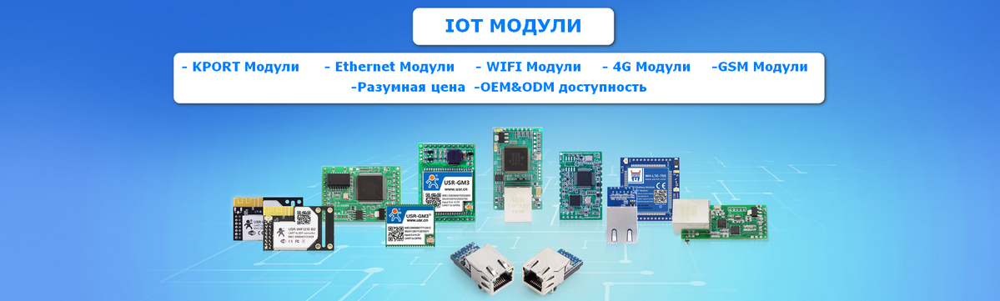
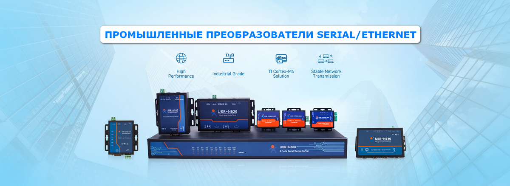

- 
- 
Популярные товары
USR-TCP232-306
USR-TCP232-304
USR-TCP232-410S
Преобразователь Modbus USR-M511
ОПИСАНИЕ USR-M511 это новейший преобразователь Modbus в Ethernet с возможностью работы в режиме Modbus RTU/ASCII slave и отображения всех рабочих параметров и текущих данных в встроенном web-интерфейсе. Он также поддерживает режим работы Modbus TCP Master. USR-M511 предоставляет гибкий способ для управления и мониторинга устройств, поддерживающих протокол Modbus RTU/ASCII.
Стоимость 6000 руб.
USR-TCP232-304
ОПИСАНИЕ Законченное устройство преобразователя RS485 Ethernet, используемое для прозрачной передачи данных. Преобразователь USR-TCP232-304 Ethernet в Serial представляет собой оборудование для преобразования пакетов данных TCP или UDP в данные для интерфейса RS232. Преобразователь является встраиваемым конвертором последовательного в Ethernet, который имеет интегрированный набор протоколов TCP/IP.
Cтоимость 2820,0 руб.